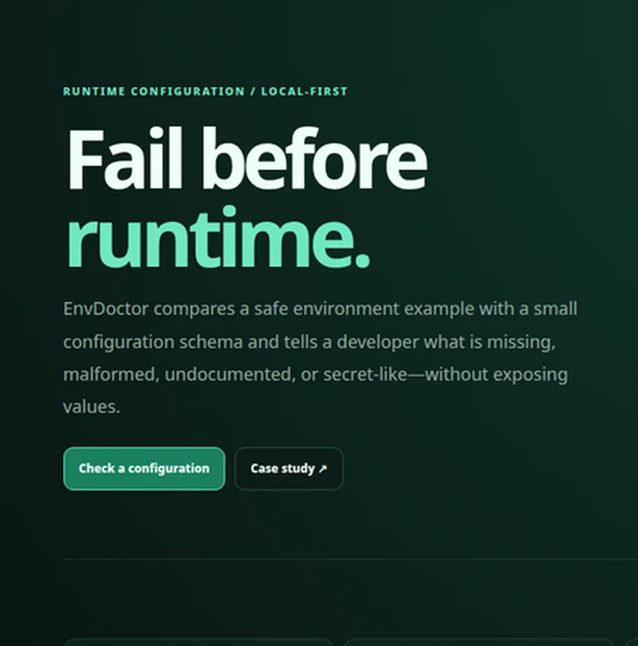
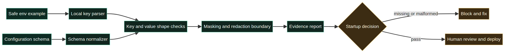

المهمة اليومية
قارن example آمنًا بالعقد قبل التشغيل واكتشف المفتاح المفقود.
EnvDoctor يحول إعدادات التشغيل إلى عقد قابل للفحص. يقارن env example آمنًا مع schema ويبلغ عن المفاتيح المفقودة أو غير الموثقة أو غير الصحيحة دون طباعة قيم الأسرار.

قد ينجح المشروع في البناء بينما تكون إعدادات النشر ناقصة. المهمة المستمرة هي جعل المفاتيح المطلوبة وأشكالها والملكية وحدود الأسرار واضحة قبل بدء الخدمة. تستهدف EnvDoctor المطورين ومهندسي المنصات والمراجعين.
قارن example آمنًا بالعقد قبل التشغيل واكتشف المفتاح المفقود.
أظهر اسم المفتاح والقاعدة، ولا تعرض القيمة. الفشل الآمن أفضل من تشخيص يسرّب السر.
| القرار | الاختيار | السبب |
|---|---|---|
| الإدخال | env example وJSON schema | حدود واضحة وآمنة للعرض العام. |
| الفحص | required وURL وnumber وunscoped | إشارات محلية سهلة التفسير. |
| الخصوصية | عدم طباعة القيم | المراجعة لا تنشئ تسريبًا جديدًا. |

أعادت عينة المفتاح الناقص `Startup blocked` بسبب غياب `SECRET_KEY`، وتحذيرًا لـ`DEBUG` غير الموثق، وأكدت الحالة أن القيم لم تُطبع. هذه نتيجة fixture وليست metric للنشر.
الحد: EnvDoctor ليس vault ولا secret manager ولا يضمن أن الخدمة ستبدأ.
إضافة schema versions وparsing لملفات `.env` واختبارات redaction ومخرجات CI وadapters للنشر وملكية واضحة للعقد.